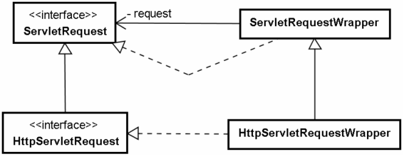

|
基於安全考量，你希望將一些HTML過濾掉，或者乾脆將所有的<、>角括號置換為HTML的替代字元<與>。你可以使用過濾器的方式，將使用者請求參數中的角括號字元進行替換。但問題在於，雖然你可以使用HttpServletRequest的getParameter()取得請求參數值，但就是沒有一個像setParameter()的方法，可以讓你將處理過後的請求參數重新設定給HttpServletRequest。
你也許會想要親自實作HttpServletRequest介面，讓getParameter()傳回過濾後的請求參數值，但這麼作的話，HttpServletRequest介面上所有定義的方法都要實作，實作所有的方法是件很麻煩的事。所幸，有個HttpServletRequestWrapper幫你實作了HttpServletRequest介面，你只要繼承HttpServletRequestWrapper類別，並撰寫你想要重新定義的方法即可。相對應於ServletRequest介面，也有個ServletRequestWrapper類別可以使用。

以下的範例透過繼承HttpServletRequestWrapper實作了一個請求包裹器，可以將請求參數中的角括號替換為替代字元。
package cc.openhome;
import java.util.*;
import javax.servlet.http.*;
public class CharacterRequestWrapper extends HttpServletRequestWrapper {
private Map<String, String> escapeMap;
public CharacterRequestWrapper(HttpServletRequest request,
Map<String, String> escapeMap) {
super(request);
this.escapeMap = escapeMap;
}
@Override
public String getParameter(String name) {
return doEscape(getRequest().getParameter(name));
}
private String doEscape(String parameter) {
if(parameter == null) {
return null;
}
String result = parameter;
for(String origin : escapeMap.keySet()) {
String escape = escapeMap.get(origin);
result = result.replaceAll(origin, escape);
}
return result;
}
}
在繼承HttpServletRequestWrapper之後，必須定義建構式，透過super()來呼叫父類別建構式，並傳入想要包裹的原請求物件，之後若想取得被包裹的原請求物件，則可以透過getRequest()方法來取得。建構式中也傳入了一個Map物件，這個物件中「鍵」的部份為想要替換的原字元，「值」的部份則是對應的替代字元。
如果程式中想要從包裹器請求物件的getParameter()取得請求參數，則先從原請求物件的getParameter()取得值，然後進行字元替換。字元替換的方法撰寫在doEscape()方法之中。
可以使用這個請求包裹器類別搭配過濾器，以進行字元過濾的服務。例如：
package cc.openhome;
import java.io.*;
import java.util.*;
import java.util.logging.Level;
import java.util.logging.Logger;
import javax.servlet.*;
import javax.servlet.annotation.*;
import javax.servlet.http.*;
@WebFilter(filterName="CharacterFilter", urlPatterns={"/guestbook.do"},
initParams={
@WebInitParam(
name="ESCAPE_LIST",
value="/WEB-INF/escapelist.txt"
)
}
)
public class CharacterFilter implements Filter {
private Map<String, String> escapeMap;
@Override
public void init(FilterConfig filterConfig) throws ServletException {
BufferedReader reader = null;
try {
String escapeListFile = filterConfig
.getInitParameter("ESCAPE_LIST");
reader = new BufferedReader(
new InputStreamReader(
filterConfig.getServletContext()
.getResourceAsStream(escapeListFile)));
String input = null;
escapeMap = new HashMap<String, String>();
while ((input = reader.readLine()) != null) {
String[] tokens = input.split("\t");
escapeMap.put(tokens[0], tokens[1]);
}
} catch (IOException ex) {
Logger.getLogger(CharacterFilter.class.getName())
.log(Level.SEVERE, null, ex);
}
finally {
try {
reader.close();
} catch (IOException ex) {
Logger.getLogger(CharacterFilter.class.getName())
.log(Level.SEVERE, null, ex);
}
}
}
@Override
public void doFilter(ServletRequest request, ServletResponse response,
FilterChain chain) throws IOException, ServletException {
HttpServletRequest requestWrapper =
new CharacterRequestWrapper(
(HttpServletRequest) request, escapeMap);
chain.doFilter(requestWrapper, response);
}
@Override
public void destroy() {}
}
這個過濾器過濾字元的依據是個字元表檔案，檔案名稱可以透過過濾器初始參數來設定，並透過FilterConfig
的getInitParameter()來取得檔案名稱。讀入的字元對應將分別填入Map物件的「鍵」與「值」。接下來在Filter的doFilter
()之中，建立CharacterRequestWrapper實例，並將原請求物件傳入建構式進行包裹。然後將
CharacterRequestWrapper實例傳入FilterChain的doFilter()中作為請求物件。之後的Filter或Servlet實例，不需要也不會知道請求物件已經被包裹，在必須取得請求參數時，一樣呼叫getParameter()即可。
字元過濾表檔案必須放在WEB-INF之中，檔名為escapelist.txt，你可以自行新增要過濾的字元到檔案中，字元之間以跳位字元（\t）分隔。例如檔案內容如下：
< <
> >
當你將這個過濾器掛上去之後，如果有使用者試圖輸入HTML標籤，由於角括號都被替換為替代字元。
|